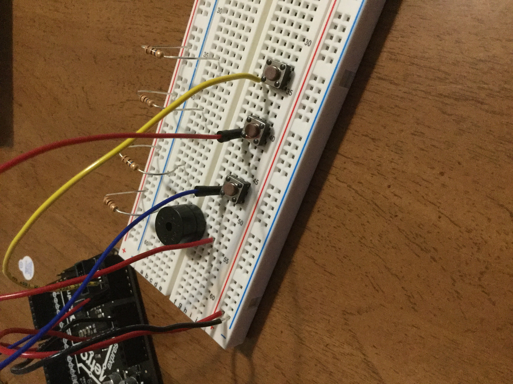

Microcontroler that produce an output
Here is the code that was uploaded:
int pos = 0;
void setup()
{
pinMode(A0, INPUT);
pinMode(8, OUTPUT);
pinMode(A1, INPUT);
pinMode(A2, INPUT);
}
void loop()
{
// if button press on A0 is detected
if (digitalRead(A0) == HIGH) {
tone(8, 400, 100); // play tone 57 (A4 = 440 Hz)
}
// if button press on A1 is detected
if (digitalRead(A1) == HIGH) {
tone(8, 500, 100); // play tone 59 (B4 = 494 Hz)
}
// if button press on A0 is detected
if (digitalRead(A2) == HIGH) {
tone(8, 600, 100); // play tone 60 (C5 = 523 Hz)
}
delay(10); // Delay a little bit to improve simulation performance
}